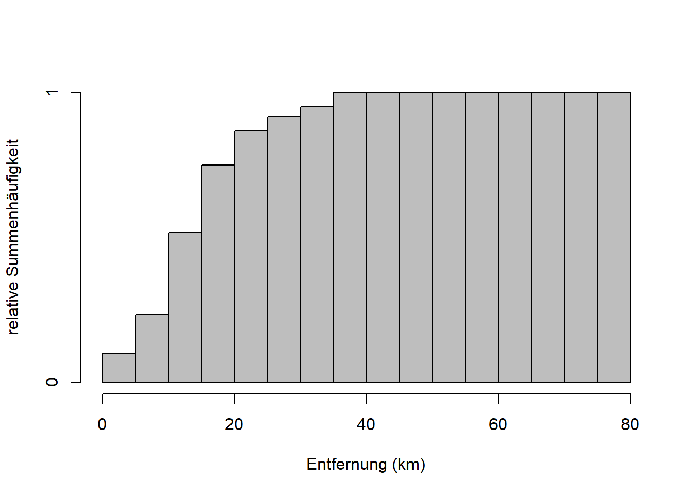
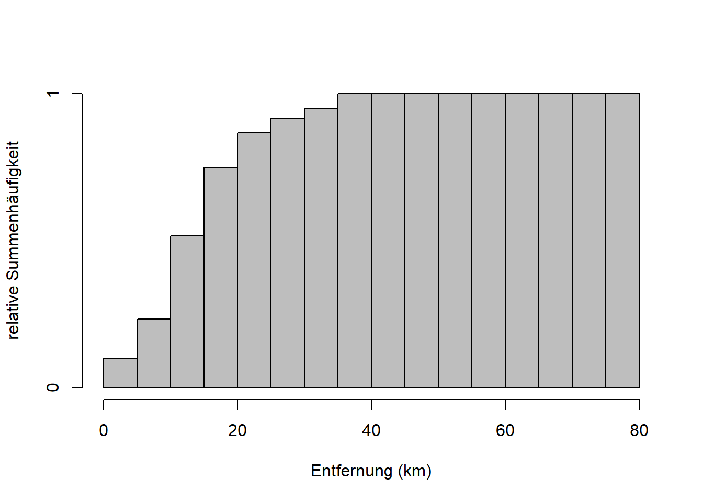
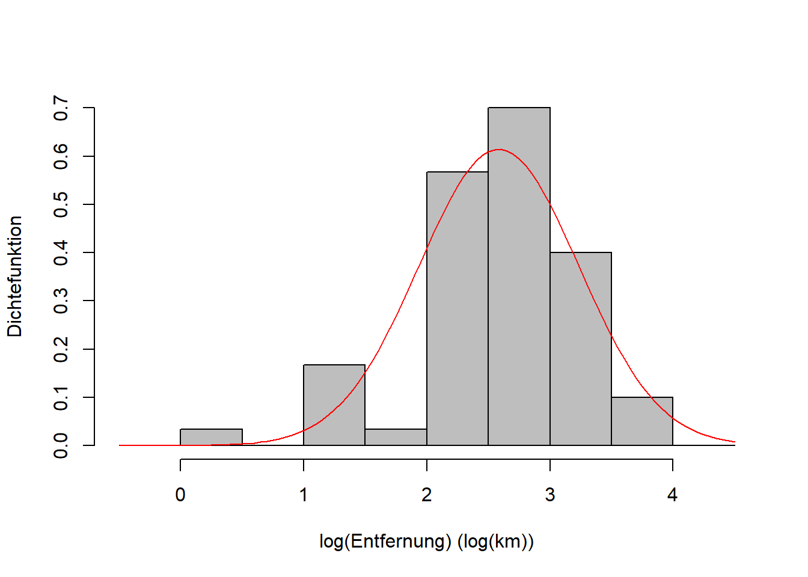
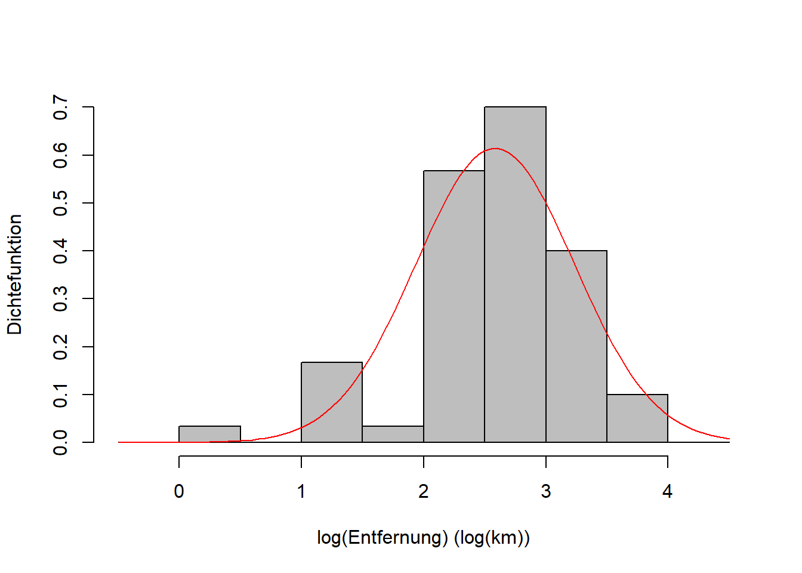

Kapitel 7 Verteilungen
In Kapitel 6 haben wir gesehen, dass alle \(36\) Elementarereignisse zweier Würfelwürfe \(\omega=(1;1),(1;2),\ldots,(6;6)\) (vgl. Abbildung 6.2) die gleiche Wahrscheinlichkeit haben, nämlich \(\Pr(\omega_i)=\frac{1}{6}\cdot\frac{1}{6}=\frac{1}{36}\). In Abbildung 7.1 links, sehen wir eine Verteilung dieser Wahrscheinlichkeiten; in diesem Fall ist es eine sogenannte diskrete Gleichverteilung. Wenn uns die Gesamtaugenzahl interessiert, gibt es Ereignisse (z.B. “Gesamtaugenzahl 7”), hier mit \(E\) symbolisiert, die wahrscheinlicher sind als andere. Das deckt sich mit unserer Erfahrung mit Würfelspielen. Die Verteilung ist symmetrisch um ein Maximum bei \(7\) (Abbildung 7.1 rechts), eine sogenannte diskrete Dreiecksverteilung. Formal schreiben wir: \[\begin{equation} \Pr(E)=\sum_{\omega_i\in E}\Pr\left(\omega_i\right) \tag{7.1} \end{equation}\] > In Worten: Die Wahrscheinlichkeit des Ereignisses \(E\) ist gleich der Summe der Wahrscheinlichkeiten aller Elementarereignisse \(\omega_i\), die zu \(E\) gehören.


Abbildung 7.1: Links: Die \(36\) Elementarereignisse zweier Würfelwürfe sind gleichverteilt mit \(\Pr(\omega_i)=\frac{1}{36}\); die Wahrscheinlichkeitsverteilung ist eine Gleichverteilung. Rechts: Die Wahrscheinlichkeitsverteilung der Ereignisse \(E\), der Gesamtaugenzahl zweier Würfelwürfe, ist eine Dreiecksverteilung; das Ereignis \(7\) ist am wahrscheinlichsten.
In diesem Kapitel soll es um solche Wahrscheinlichkeitsverteilungen gehen. Erinnern wir uns, dass eine Zufallsvariable ein Merkmal ist, dessen Werte als Ergebnisse eines Zufallsvorgangs interpretiert werden (vgl. Kapitel 6). Die Wahrscheinlichkeitsverteilung der Zufallsvariable ist nun ein Modell, das das Verhalten der Zufallsvariable vollständig beschreibt. Alternative Bezeichnungen sind Verteilung und theoretische Verteilung.
So wie wir diskrete und stetige Zufallsvariablen unterscheiden (vgl. Kapitel 6), unterscheiden wir auch diskrete und stetige Verteilungen. Für diskrete Verteilungen werden wir den Begriff Wahrscheinlichkeitsfunktion kennenlernen und für stetige Verteilungen den Begriff Dichtefunktion. Für kumulierte Wahrscheinlichkeiten lernen wir den Begriff Verteilungsfunktion kennen, der für diskrete und stetige Verteilungen gleichermaßen gilt. Am Ende des Kapitels stellen wir wichtige Verteilungen und ihre Anwendungen kurz vor.
7.1 Von der empirischen zur theoretischen Verteilung
Wir haben bereits Darstellungen von empirischen Verteilungen in der Form von Histogrammen (und Boxplots) kennengelernt (vgl. Kapitel 3). Nehmen wir das Beispiel “Entfernung” aus den Reisedaten (Abbildung 7.2). “Entfernung” ist eine stetige Zufallsvariable, die hier aber klassiert dargestellt ist. Ein Beispiel für eine diskrete Zufallsvariable ist das Merkmal “Anzahl Vulkanausbrüche” aus Zimmermann-Janschitz (2014).
 

Abbildung 7.2: Links: Empirische Verteilung des Merkmals “Entfernung”. Der 5. Balken z.B. hat eine Höhe von etwa \(0.1\); d.h. rund 10% der Merkmalswerte sind in Klasse 5 (20 - 25km). Rechts: Empirische Verteilungsfunktion des Merkmals “Entfernung”. Der 5. Balken hat eine Höhe von etwa \(0.92\); d.h. rund 92% der Merkmalswerte sind kleiner oder gleich 25km.
Die theoretische Verteilung ist eine mathematische Funktion, die an die Daten der Stichprobe angepasst wurde (Abbildung 7.3). Genau genommen ist die theoretische Verteilung unser Modell für die Grundgesamtheit, aus der die Stichprobe entnommen wurde. Aber die Parameter dieses Modells werden anhand der Stichprobendaten geschätzt (wie genau lernen wir in Kapitel 8). Für die Entfernungsdaten passt die Lognormalverteilung ganz gut - aber nicht perfekt - mehr dazu weiter unten.
Abbildung 7.3: Links: Theoretische Verteilung des Merkmals “Entfernung” über der empirischen Verteilung. Hier wurde eine Lognormalverteilung angepasst. Rechts: Theoretische Verteilungsfunktion des Merkmals “Entfernung” über der empirischen Verteilungsfunktion.
Im Fall von diskreten Zufallsvariablen sprechen wir von der Wahrscheinlichkeitsfunktion: \[\begin{equation} f_X(x)=\Pr(X=x) \tag{7.2} \end{equation}\]
In Worten: Die Wahrscheinlichkeitsfunktion einer diskreten Zufallsvariable \(X\) in Abhängigkeit der Ausprägung \(x\) ist die Eintrittswahrscheinlichkeit von \(x\). Vgl. Abbildung 6.2 und Abbildung 7.1, links.
Im Fall von stetigen Zufallsvariablen sprechen wir von der Dichtefunktion: \[\begin{equation} \int_{a}^{b}f_X(x)\;dx=\Pr(a\leq x\leq b) \tag{7.3} \end{equation}\]
In Worten: Das Integral von \(x=a\) bis \(x=b\) der Dichtefunktion einer stetigen Zufallsvariable \(X\) in Abhängigkeit der Ausprägung \(x\) ist die Wahrscheinlichkeit, dass \(X\) zwischen \(a\) und \(b\) liegt. Vgl. Abbildung 7.3, links.
Die kumulierten Wahrscheinlichkeiten beschreibt in beiden Fällen die Verteilungsfunktion: \[\begin{equation} F_X(x)=\Pr(X\leq x) \tag{7.4} \end{equation}\]
In Worten: Die Verteilungsfunktion einer beliebigen Zufallsvariable \(X\) in Abhängigkeit der Ausprägung \(x\) ist die Wahrscheinlichkeit, dass \(X\) kleiner oder gleich \(x\) ist. Vgl. Abbildung 7.3, rechts.
Die Analogien zwischen empirischen und theoretischen Verteilungen können Sie auch nochmal in Mittag (2016), Tabelle 10.3 auf S. 159 nachlesen.
7.2 Parameter theoretischer Verteilungen
Die Form einer Verteilung wird grundsätzlich von der mathematischen Formel der entsprechenden Wahrscheinlichkeits- bzw. Dichtefunktion bestimmt. Die für uns wichtigsten Verteilungen und ihre Formen werden wir weiter unten kennenlernen. Auf die mathematischen Formeln werden wir in diesem Kurs nicht eingehen; sie können beispielsweise in Mittag (2016) nachgeschlagen werden. Wichtig zu wissen ist aber, dass die Wahrscheinlichkeits- bzw. Dichtefunktion sogenannte Parameter hat, die die Lage und die Breite der Verteilung, und bei manchen Verteilungen auch die Form selber, bestimmen.
Schauen wir uns das für den einfachsten Fall der sogenannten Normalverteilung an (Abbildung 7.4)6.
# generiere x-Werte von -5 bis 5 in 0.1-Schritten
x <- seq(-5, 5, 0.1)
# plotte Dichtefunktion der Normalverteilung mit µ = 0 und sigma = 1 für x
plot(x, dnorm(x, mean = 0, sd = 1), type = 'l', xlab = 'X = x', ylab = 'Dichtefunktion')
Abbildung 7.4: Form der Dichtefunktion der Normalverteilung einer beliebigen Zufallsvariable \(X\). Hier ist die Standardnormalverteilung \(N(0,1)\) dargestellt, mit Mittelwert \(\mu=0\) und Standardabweichung \(\sigma=1\).
Wenn wir ausdrücken wollen, dass eine Zufallsvariable \(X\) normalverteilt ist schreiben wir: \[\begin{equation} X\sim N(\mu,\sigma) \tag{7.5} \end{equation}\] Das Tildesymbol \(\sim\) bedeutet “ist verteilt gemäß”, das \(N\) steht für die Normalverteilung und in Klammern stehen die Parameter der Verteilung, in diesem Fall \(\mu\) und \(\sigma\). Andere Verteilungen haben eine höhere oder auch geringere Anzahl Parameter und diese haben oft auch andere Bezeichnungen. Im Fall der Normalverteilung ist \(\mu\) der Mittelwert (Erwartungswert) und \(\sigma\) ist die Standardabweichung der Zufallsvariable \(X\)7. Es handelt sich hier um theoretische Parameter der Grundgesamtheit, nicht zu verwechseln mit den empirischen Parametern einer Stichprobe. Wenn die Stichprobe aber tatsächlich aus einer normalverteilten Grundgesamtheit stammt, dann sind empirischer Mittelwert und Standardabweichung die Schätzer der entsprechenden theoretischen Parameter! Das Schätzen von Verteilungsparametern wird uns in Kapitel 8 beschäftigen.
Den Effekt verschiedener Werte für \(\mu\) und \(\sigma\) auf die Lage und Breite der Verteilung sehen wir wenn wir \(\mu\) und \(\sigma\) variieren (Abbildung 7.5).
# generiere x-Werte von -5 bis 5 in 0.1-Schritten
x <- seq(-5, 5, 0.1)
# plotte Dichtefunktion der Normalverteilung mit µ = -1, 0, 1 und sigma = 1 für x
# (linke Abbildung)
plot(x, dnorm(x, mean = 0, sd = 1), type='l', ylim = c(0, 0.45),
xlab = 'X = x', ylab = 'Dichtefunktion', panel.first = grid())
curve(dnorm(x, mean = -1, sd = 1), add = TRUE, col = 'red')
curve(dnorm(x, mean = 1, sd = 1), add = TRUE, col = 'blue')
legend('topright', legend = c('N(-1, 1)', 'N(0, 1)', 'N(1, 1)'),
col = c('red', 'black', 'blue'), lty = 1)
# plotte Dichtefunktion der Normalverteilung mit µ = 0 und sigma = 1, 1.5, 2 für x
# (rechte Abbildung)
plot(x, dnorm(x, mean = 0, sd = 1), type = 'l', ylim = c(0, 0.45),
xlab = 'X = x', ylab = 'Dichtefunktion', panel.first = grid())
curve(dnorm(x, mean = 0, sd = 2), add = TRUE, col = 'red')
curve(dnorm(x, mean = 0, sd = 1.5), add = TRUE, col = 'blue')
legend('topright', legend = c('N(0, 2)', 'N(0, 1.5)', 'N(0, 1)'),
col = c('red', 'blue', 'black'), lty = 1)

Abbildung 7.5: Links: Dichtefunktion der Normalverteilung einer beliebigen Zufallsvariable \(X\) für verschiedene Werte \(\mu\). Wir sehen, dass der Parameter \(\mu\) die Verteilung nach rechts bzw. links verschiebt. Rechts: Dichtefunktion der Normalverteilung einer beliebigen Zufallsvariable \(X\) für verschiedene Werte \(\sigma\). Wir sehen, dass der Parameter \(\sigma\) die Verteilung breiter bzw. schmaler macht.
Der Parameter \(\mu\) verschiebt also die Verteilung nach rechts bzw. links; Breite und Form bleiben gleich. Der Parameter \(\sigma\) macht die Verteilung breiter bzw. schmaler; Lage und Form bleiben gleich.
Merke: Die Fläche unter der Kurve bleibt ebenfalls gleich; sie ist immer \(1\) aufgrund des 2. Axioms nach Kolmogorow \(K2: \Pr(\Omega)=1\) (Normierung); vgl. Kapitel 6. Deshalb wird die Verteilung wenn sie breiter wird gleichzeitig niedriger und wenn sie schmaler wird gleichzeitig höher.
Bisher haben wir uns nur die Dichtefunktion der Normalverteilung angeschaut. Es fehlt die Verteilungsfunktion als Darstellung der kumulierten Wahrscheinlichkeit. Diese ist wichtig, da wir damit einfach Quantile berechnen können, die in der induktiven Statistik häufig zum Einsatz kommen. Die Verteilungsfunktion der Normalverteilung ist in Abbildung 7.6 für verschiedene Werte \(\mu\) und \(\sigma\) dargestellt (vgl. Abbildung 7.5).
# generiere x-Werte von -5 bis 5 in 0.1-Schritten
x <- seq(-5, 5, 0.1)
# plotte Verteilungsfunktion der Normalverteilung mit µ = -1, 0, 1 und sigma = 1 für x
# (linke Abbildung)
plot(x, pnorm(x, mean = 0, sd = 1), type = 'l',
xlab = 'X = x', ylab = 'Verteilungsfunktion', panel.first = grid())
curve(pnorm(x, mean = -1, sd = 1), add = TRUE, col = 'red')
curve(pnorm(x, mean = 1, sd = 1), add = TRUE, col = 'blue')
legend('topleft', legend = c('N(-1, 1)', 'N(0, 1)', 'N(1, 1)'),
col = c('red', 'black', 'blue'), lty = 1)
# plotte Verteilungsfunktion der Normalverteilung mit µ = 0 und sigma = 1, 1.5, 2 für x
# (rechte Abbildung)
plot(x, pnorm(x, mean = 0, sd = 1), type = 'l',
xlab = 'X = x', ylab = 'Verteilungsfunktion', panel.first = grid())
curve(pnorm(x, mean = 0, sd = 2), add = TRUE, col = 'red')
curve(pnorm(x, mean = 0, sd = 1.5), add = TRUE, col = 'blue')
legend('topleft', legend = c('N(0, 2)', 'N(0, 1.5)', 'N(0, 1)'),
col = c('red', 'blue', 'black'), lty = 1)

Abbildung 7.6: Links: Verteilungsfunktion der Normalverteilung einer beliebigen Zufallsvariable \(X\) für verschiedene Werte \(\mu\). Rechts: Verteilungsfunktion der Normalverteilung einer beliebigen Zufallsvariable \(X\) für verschiedene Werte \(\sigma\). Vgl. Abbildung 7.5.
Wenn wir Abbildung 7.5 und Abbildung 7.6 vergleichen, dann sehen wir, dass die Verteilungsfunktion dort am steilsten ist, wo die Dichtefunktion ihr Maximum hat; dort ändert sich sozusagen in der kumulierten Wahrscheinichkeit am meisten. Wenn die Dichtefunktion abflacht, dann nimmt auch die Steigung der Verteilungsfunktion wieder ab. Es ist wichtig, dass Sie den Zusammenhang zwischen Dichte- und Verteilungsfunktion verstehen, der analog zum Zusammenhang zwischen Häufigkeit und Summenhäufigkeit ist (vgl. Kapitel 3).
7.3 Kenngrößen theoretischer Verteilungen
Auch für die Kenngrößen theoretischer Verteilungen ist es wichtig, dass wir die Parallelen zu den empirischen Verteilungen sehen.
Der Erwartungswert theoretischer Verteilungen ist: \[\begin{equation} E(X)=\mu=\sum_{j=1}^{m}x_j\cdot \Pr\left(X=x_j\right)\quad\text{für diskrete Verteilungen} \tag{7.6} \end{equation}\] \[\begin{equation} E(X)=\mu=\int_{-\infty}^{\infty}x\cdot f_X(x)\;dx\quad\text{für stetige Verteilungen} \tag{7.7} \end{equation}\]
Merke: Für den theoretischen Erwartungswert wird häufig das Symbol \(\mu\) verwendet. Damit ist aber nicht unbedingt der Parameter gleichen Namens der Normalverteilung gemeint, obwohl natürlich beide Größen identisch sind, wenn die Zufallsvariable normalverteilt ist. Aber auch der Erwartungswert anderer theoretischer Verteilungen wird häufig mit \(\mu\) bezeichnet. Das ist leider so verwirrend.
Die Formulierung des Erwartungswertes ist analog zur gewichteten Formulierung des arithmetischen Mittels empirischer Verteilungen (vgl. Kapitel 3): \[\bar x=\sum_{j=1}^{m}a_j\cdot f_j\] Vgl. die ungewichtete Formulierung: \[\bar x=\frac{\sum_{i=1}^{n}x_i}{n}\]
Die Varianz theoretischer Verteilungen ist der Erwartungswert der quadrierten Streuung um den Mittelwert \(\sigma^2=E\left(\left(x_j-\mu\right)^2\right)\), d.h.: \[\begin{equation} V(X)=\sigma^2=\sum_{j=1}^{m}\left(x_j-\mu\right)^2\cdot \Pr\left(X=x_j\right)\quad\text{für diskrete Verteilungen} \tag{7.8} \end{equation}\] \[\begin{equation} V(X)=\sigma^2=\int_{-\infty}^{\infty}\left(x-\mu\right)^2\cdot f_X(x)\;dx\quad\text{für stetige Verteilungen} \tag{7.9} \end{equation}\]
Merke: Wiederum wird hier häufig das Symbol des entsprechenden Parameters der Normalverteilung, \(\sigma^2\), verwendet. Beide Größen sind identisch, wenn die Zufallsvariable normalverteilt ist. Aber auch die Varianze anderer theoretischer Verteilungen wird häufig mit \(\sigma^2\) bezeichnet.
Die Formulierung der Varianz ist analog zur Formulierung der Varianz empirischer Verteilungen, hier wie gehabt korrigiert angegeben (vgl. Kapitel 4): \[s^2=\frac{\sum_{i=1}^{n}\left(x_i-\bar x\right)^2}{n-1}\]
Die Standardabweichung theoretischer Verteilungen ist dementsprechend: \[\begin{equation} \sigma=\sqrt{\sigma^2} \tag{7.10} \end{equation}\] Das ist für diskrete und stetige Zufallsvariablen gleich, und analog zur Formulierung der Standardabweichung empirischer Verteilungen: \[s=\sqrt{s^2}\]
Quantile theoretischer Verteilungen sind: \[\begin{equation} F_X(x_p)=\Pr\left(X\leq x_p\right)=p \tag{7.11} \end{equation}\]
In Worten: Das \(p\)-Quantil einer beliebigen Zufallsvariable \(X\) ist die Stelle \(x_p\), an der die Verteilungsfunktion \(F_X\) der Zufallsvariable gleich \(p\) ist. Die Verteilungsfunktion gibt die Wahrscheinlichkeit an, dass die Zufallsvariable \(X\) einen Wert kleiner oder gleich \(x_p\) annimmt.
Das Prinzip ist das gleiche für empirische Verteilungen, wobei die folgenden Rechenregeln gelten (vgl. Kapitel 4): \[\bar x_p=\frac{x_{n\cdot p}+x_{n\cdot p+1}}{2}\quad\text{falls}\quad n\cdot p\quad\text{ganzzahlig}\] \[\bar x_p=x_i\quad\text{falls}\quad n\cdot p\quad\text{nicht ganzzahlig, wobei}\quad i\quad\text{die nächstgrößere Zahl ist}\]
7.4 Wichtige Verteilungen und ihre Anwendungen
Hier soll auf ein paar Vetreilungen eingegangen werden, die für den weiteren Verlauf Ihres Studiums wichtig sind.
7.4.1 Normalverteilung
Die Normalverteilung (Abbildung 7.5) ist eine symmetrische, stetige Verteilung. Der Wertebereich geht von \(-\infty\) bis \(\infty\), d.h. die Verteilung ist für negative als auch positive Ausprägungen definiert. Die Normalverteilung ist die am häufigsten angenommene Verteilung. Das mag zum einen daran liegen, dass die Normalverteilung mathematisch relativ einfach zu handhaben ist. Zum anderen scheinen aber tatsächlich viele reale Zufallsvorgänge einer Normalverteilung zu folgen. Ein typisches Beispiel ist die Verteilung von zufälligen Messfehlern bei der Verwendung von Messinstrumenten im Feld und im Labor. Sehen Sie sich nochmal Abbildung 7.4 an. Wenn kein systematischer Fehler vorliegt, dann macht es Sinn, die Verteilung von Messfehlern um Null zu zentrieren - im Mittel misst das Instrument genau. Um diesen Mittelwert \(\mu=0\) streuen die Daten mehr oder weniger stark - in Abhängigkeit der Standardabweichung \(\sigma\) - wobei kleine Abweichungen wahrscheinlicher sind als große. Man bestimmt die Verteilungsparameter anhand von Wiederholungsmessungen an der selben Probe oder am selben Standort. Diese Konzeption des Messfehlers werden Sie beispielsweise im bodenkundlichen Praktikum verwenden.
Mathematisch lässt sich zeigen, dass die Normalverteilung aus der Summe vieler Einzelprozesse entsteht, selbst wenn die Einzelprozesse ganz anderen Verteilungen folgen; der aggregierte Zufallsprozess folgt einer Normalverteilung. Das ist der zentrale Grenzwertsatz. Theoretisch muss es die Summe unendlich vieler Einzelprozesse sein; wir sehen eine Normalverteilung aber bereits bei wenigen Summanden auftauchen, was wir anhand wiederholter Würfelwürfe zeigen können (Abbildung 7.7).
# Paket laden, das uns die diskrete Gleichverteilung gibt
library('extraDistr')
# 1000 Realisationen eines Würfelwurfes simulieren
w1 <- rdunif(1000, 1, 6)
# 1000 Realisationen der Summe zweier Würfelwürfe simulieren
w2 <- w1 + rdunif(1000, 1, 6)
# usw. bis zu sechs Würfelwürfen
w3 <- w2 + rdunif(1000, 1, 6)
w4 <- w3 + rdunif(1000, 1, 6)
w5 <- w4 + rdunif(1000, 1, 6)
w6 <- w5 + rdunif(1000, 1, 6)
# empirische Wahrscheinlichkeitsfunktion plotten
hist(w1, breaks = seq(0.5, 6.5, 1), freq = FALSE,
main = '1 Würfel', xlab = 'Gesamtaugenzahl', ylab = 'Wahrscheinlichkeit')
hist(w2, breaks = seq(1.5, 12.5, 1), freq = FALSE,
main = '2 Würfel', xlab = 'Gesamtaugenzahl', ylab = 'Wahrscheinlichkeit')
hist(w3, breaks = seq(2.5, 18.5, 1), freq = FALSE,
main = '3 Würfel', xlab = 'Gesamtaugenzahl', ylab = 'Wahrscheinlichkeit')
hist(w4, breaks = seq(3.5, 24.5, 1), freq = FALSE,
main = '4 Würfel', xlab = 'Gesamtaugenzahl', ylab = 'Wahrscheinlichkeit')
hist(w5, breaks = seq(4.5, 30.5, 1), freq = FALSE,
main = '5 Würfel', xlab = 'Gesamtaugenzahl', ylab = 'Wahrscheinlichkeit')
hist(w6, breaks = seq(5.5, 36.5, 1), freq = FALSE,
main = '6 Würfel', xlab = 'Gesamtaugenzahl', ylab = 'Wahrscheinlichkeit')Abbildung 7.7: Illustration des zentralen Grenzwertsatzes. Mit zunehmender Anzahl addierter Zufallsprozesse (hier Würfelwürfe, die jeweils einer Gleichverteilung folgen), nähert sich die Wahrscheinlichkeitsverteilung der Summe einer Normalverteilung an.
7.4.2 Lognormalverteilung
Die Lognormalverteilung ist eine typische Wahl wenn eine stetige Zufallsvariable nur positive Ausprägungen hat, da die Verteilung von \(0\) bis \(\infty\) definiert ist. Sie ist rechtsschief, d.h. linkssteil (vgl. Kapitel 4). Gemäß dem zentralen Grenzwertsatz (s. oben) kann sie als aggregierte Verteilung vieler multiplikativer Zufallsvorgänge interpretiert werden. Ein Beispiel für lognormalverteilte Zufallsvariablen ist Einkommen; viele haben wenig und wenige haben viel. Wir schreiben: \[\begin{equation} X\sim logN(\mu,\sigma) \tag{7.12} \end{equation}\]
Die Parameter der Lognormalverteilung sind, leider wie die der Normalverteilung, ebenfalls mit \(\mu\) und \(\sigma\) bezeichnet. Diese sind aber nicht mehr gleich mit Erwartungswert und Standardabweichung der Zufallsvariable; hier sind es lediglich Symbole für die Parameter. Die Symbole haben sich etabliert, weil es eine einfache Entsprechung zwischen Lognormal- und Normalverteilung gibt:
Wenn \(X\) lognormalverteilt ist, \(X\sim logN(\mu,\sigma)\), dann ist das log-transformierte \(X\) normalverteilt, \(\log(X)\sim N(\mu,\sigma)\), mit den gleichen Parametern \(\mu\) und \(\sigma\).
D.h. die Schätzer für die beiden Parameter sind das arithmetische Mittel bzw. die Standardabweichung der log-transformierten Daten einer Stichprobe (s. Kapitel 8).
Schauen wir uns die Form der Lognormalverteilung für verschiedene Parameterkonstellationen an (Abbildung 7.8). Beide Parameter kontrollieren hier sowohl den Erwartungswert als auch die Varianz und damit auch die Form der Verteilung; im Beispiel sehen wir das nur für \(\sigma\) während \(\mu\) konstant gehalten ist. An den Formeln für Erwartungswert und Varianz könnten wir sehen, dass dort jeweils beide Parameter eingehen. Das können Sie beispielsweise in Mittag (2016) nachlesen.
# generiere x-Werte von 0 bis 3 in 0.05-Schritten
x <- seq(0, 3, 0.05)
# plotte Dichtefunktion der Lognormalverteilung mit µ = 0 und sigma = 0.25, 0.5, 1 für x
# (linke Abbildung)
plot(x, dlnorm(x, mean = 0, sd = 0.25), type = 'l', ylim = c(0, 2),
xlab = 'X = x', ylab = 'Dichtefunktion', panel.first = grid())
curve(dlnorm(x, mean = 0, sd = 0.5), add = TRUE, col = 'red')
curve(dlnorm(x, mean = 0, sd = 1), add = TRUE, col = 'blue')
legend('topright', legend = c('logN(0, 0.25)', 'logN(0, 0.5)', 'logN(0, 1)'),
col = c('black', 'red', 'blue'), lty = 1)
# Verteilungsfunktion
# (rechte Abbildung)
plot(x, plnorm(x, mean = 0, sd = 0.25), type = 'l',
xlab = 'X = x', ylab = 'Verteilungsfunktion', panel.first = grid())
curve(plnorm(x, mean = 0, sd = 0.5), add = TRUE, col = 'red')
curve(plnorm(x, mean = 0, sd = 1), add = TRUE, col = 'blue')
legend('bottomright', legend = c('logN(0, 0.25)', 'logN(0, 0.5)', 'logN(0, 1)'),
col = c('black', 'red', 'blue'), lty = 1)

Abbildung 7.8: Links: Dichtefunktion der Lognormalverteilung einer beliebigen Zufallsvariable \(X\) für verschiedene Werte \(\sigma\), wobei \(\mu=0\) gesetzt ist. Wir sehen, dass der Parameter \(\sigma\) sowohl die Lage als auch die Breite, sowie die Form der Verteilung kontrolliert. Gleiches gilt für \(\mu\), ist aber hier nicht dargestellt. Sie können den R-Code anpassen, um Variationen von \(\mu\) zu simulieren. Rechts: Verteilungsfunktionfunktion der entsprechenden Variationen der Lognormalverteilung.
Da unsere Entfernungsdaten rechtsschief verteilt sind - mit relativ kleinen Werten (wenige Kilometer) und relativ großen Werten (Zehner von Kilometern), bietet sich die Lognormalverteilung als theoretische Verteilung an, auch wenn sie sich nicht perfekt an die Daten anpassen lässt (vgl. Abbildung 7.2).
Nutzen wir die Entfernungsdaten, um uns den Zusammenhang zwischen Lognormal- und Normalverteilung zu veranschaulichen. Wir hatten gesagt, wenn \(X\) lognormalverteilt ist (Abbildung 7.9 links) dann ist \(\log(X)\) normalverteilt mit den gleichen Parametern; das sehen wir in Abbildung 7.9 rechts.
# Lognormalverteilung von X
# Histogramm berechnen (ohne Output)
h <- hist(reisedat$distanz, breaks = seq(0, 75, 5), plot = FALSE)
# absolute in relative Häufigkeiten umrechnen
h$counts <- h$counts / sum(h$counts)
# plot
plot(h, freq = FALSE, col = 'gray',
main = '', xlab = 'Entfernung (km)', ylab = 'Dichtefunktion')
curve(dlnorm(x, meanlog = mean(log(reisedat$distanz)),
sdlog = sd(log(reisedat$distanz))), add = TRUE, col = 'red')
# Normalverteilung von log(X)
# Histogramm berechnen (ohne Output)
hlog <- hist(log(reisedat$distanz), breaks = seq(-0.5, 4.5, 0.5), plot = FALSE)
# absolute in relative Häufigkeiten umrechnen
hlog$counts <- hlog$counts / sum(hlog$counts)
# plot
plot(hlog, freq = FALSE, col = 'gray',
main = '', xlab = 'log(Entfernung) (log(km))', ylab = 'Dichtefunktion')
curve(dnorm(x, mean = mean(log(reisedat$distanz)),
sd = sd(log(reisedat$distanz))), add = TRUE, col = 'red') 

Abbildung 7.9: Links: Empirische Verteilung der Entfernungsdaten mit theoretischer Lognormalverteilung. Rechts: Empirische Verteilung der log-transformierten Entfernungsdaten mit theoretischer Normalverteilung.
Abschließend sei erwähnt, dass wir für Zufallsvariablen, die nur positive Ausprägungen haben, wie z.B. Entfernung, sinnvollerweise eine theoretische Verteilung annehmen sollten, die auch nur für positive Werte definiert ist, wie z.B. die Lognormalverteilung. Leider sind die meisten dieser Verteilungen schiefe Verteilungen. Wenn wir eine symmetrische Verteilung wollen, dann bietet sich weiterhin die Normalverteilung an, obwohl sie theoretisch negative Werte erzeugt, die physikalisch unrealistisch sind. In der Praxis wird die Normalverteilung oft relativ weit genug von Null weg sein, so dass negative Werte eine vernachlässigbar kleine Wahrscheinlichkeit haben. Wenn uns negative Werte trotzdem Probleme bereiten, dann können wir auf die sogenannte abgeschnittene Normalverteilung zurückgreifen, die bei Null abgeschnitten und dann skaliert ist, so dass die Fläche unter der Dichtefunktion weiterhin \(1\) ist.
7.4.3 Gleichverteilung
Die diskrete Gleichverteilung haben wir bereits kennengelernt (hier nochmal in Abbildung 7.10 links). Beispiele sind die Elementarereignisse von Glücksspielen: Würfelwürfe, Münzwürfe, Roulette, Lottozahlen, usw. Analog dazu gibt es auch eine stetige Gleichverteilung (Abbildung 7.10 rechts): \[\begin{equation} X\sim U(a,b) \tag{7.13} \end{equation}\]
In Worten: Die Zufallsvariable \(X\) ist gleichverteilt über dem Intervall \([a,b]\) (\(a\) und \(b\) sind die Parameter der Gleichverteilung).


Abbildung 7.10: Links: Diskrete Gleichverteilung der Elementarereignisse zweier Würfelwürfe. Rechts: Stetige Gleichverteilung zwischen \(2\) und \(4\).
7.4.4 Binomialverteilung
Die Binomialverteilung werden viele noch aus der Schule kennen, als Verteilung für “Ziehen mit Zurücklegen”, z.B. von Murmeln verschiedener Farbe aus einer Urne. So wird oft die Wahrscheinlichkeitsrechnung eingeführt. Wir schreiben: \[\begin{equation} X\sim B(p,n) \tag{7.14} \end{equation}\]
In Worten: Die Zufallsvariable \(X\) ist binomialverteilt mit Erfolgswahrscheinlichkeit \(p\) und Anzahl der Versuche \(n\).
Der Parameter \(p\) ist die “Erfolgswahrscheinlichkeit”, z.B. der Anteil blauer Murmeln in einer Urne mit blauen und roten Murmeln, aus der wir mit Zurücklegen ziehen. Dann ist die Wahrscheinlichkeit bei einem Versuch eine blaue Murmel zu ziehen gleich \(p\), und bei mehreren Versuchen \(n\) erwarten wir insgesamt \(p\cdot n\) blaue Kugeln zu ziehen8.
Die Binomialverteilung ist eine diskrete Verteilung. Abbildung 7.11 verdeutlicht ihre Form für verschiedene Parameterkonstellationen.


Abbildung 7.11: Links: Wahrscheinlichkeitsfunktion der Binomialverteilung für verschiedene Werte für \(p\) und \(n\). Rechts: Verteilungsfunktion der entsprechenden Binomialverteilungsvarianten.
In der Geographie verwenden wir die Binomialverteilung häufig für Zähldaten und Proportionen, z.B. in der Biogeographie. Ein Beispiel ist der Anteil überlebender Organismen als Funktion der Konzentration einer toxischen Substanz. Die Binomialverteilung dient aber auch als Wahrscheinlichkeitsmodell für Präsenz bzw. Absenz beispielsweise einer Tierart in einem Gebiet.
7.4.5 Poisson-Verteilung
Die Poisson-Verteilung ist eine weitere diskrete Verteilung für Zähldaten, z.B. fuer die Anzahl beobachteter Tierarten in einem Gebiet. Wir schreiben: \[\begin{equation} X\sim Pois(\lambda) \tag{7.15} \end{equation}\]
In Worten: Die Zufallsvariable \(X\) ist Poisson-verteilt mit Parameter \(\lambda\).
Die Poisson-Verteilung hat nur einen Parameter, \(\lambda\), der sowohl der Erwartungswert ist, als auch die Breite und damit auch die Form der Verteilung steuert (Abbildung 7.12).


Abbildung 7.12: Links: Wahrscheinlichkeitsfunktion der Poisson-Verteilung für verschiedene Werte für \(\lambda\). Rechts: Verteilungsfunktion der entsprechenden Poisson-Verteilungsvarianten.
7.4.6 Gumbel-Verteilung
Die Gumbel-Verteilung ist eine stetige, rechtsschiefe (d.h. linkssteile) Verteilung, die für den negativen als auch positiven Wertebereich definiert ist. Sie kommt beispielsweise in der Klimageographie als Extremwertverteilung von Hochwässern und Trockenheiten zur Anwendung. Wir schreiben: \[\begin{equation} X\sim Gum(\mu,\beta) \tag{7.16} \end{equation}\]
In Worten: Die Zufallsvariable \(X\) ist Gumbel-verteilt mit Lageparameter \(\mu\) und Skalierungsparameter \(\beta\).
Wiederum sind \(\mu\) und \(\beta\) lediglich Symbole für die Parameter der Verteilung und \(\mu\) hat keine Entsprechung im theoretischen Mittelwert oder in dem \(\mu\) der Normalverteilung. Abbildung 7.13 illustriert die Form der Gumbel-Verteilung.


Abbildung 7.13: Links: Dichtefunktion der Gumbel-Verteilung für verschiedene Werte für \(\mu\) und \(\beta\). Rechts: Verteilungsfunktion der entsprechenden Gumbel-Verteilungsvarianten.
7.4.7 Weibull-Verteilung
Die Weibull-Verteilung ist eine weitere stetige Extremwertverteilung, die beispielsweise in der Klimageographie die Verteilung von Windgeschwindigkeiten modelliert. Sie ist nur für positive Werte definiert. Wir schreiben: \[\begin{equation} X\sim Wei(\lambda,k) \tag{7.17} \end{equation}\]
In Worten: Die Zufallsvariable \(X\) ist Weibull-verteilt mit Skalierungsparameter \(\lambda\) und Formparameter \(k\).
Die Weibull-Verteilung hat die Besonderheit, in Abhängigkeit der Parameter rechts- oder linksschief oder annähernd symmetrisch zu sein (Abbildung 7.14). Sie ist daher sehr flexibel einsetzbar.


Abbildung 7.14: Links: Dichtefunktion der Weibull-Verteilung für verschiedene Werte für \(\lambda\) und \(k\). Rechts: Verteilungsfunktion der entsprechenden Weibull-Verteilungsvarianten.
Literatur
Mittag, H. J. 2016. Statistik (4. Auflage). Berlin: Springer Spektrum.
Zimmermann-Janschitz, S. 2014. Statistik in Der Geographie. Berlin: Springer Spektrum.
Der Name Normalverteilung heißt nicht, dass diese Verteilung im umgangssprachlichen Sinn “normaler” ist als andere Verteilungen. Sie ist jedoch, wie wir noch sehen werden, tatsächlich ein gutes Modell für viele Zufallsvorgänge.↩︎
Manchmal finden wir die Notation \(X\sim N(\mu,\sigma^2)\) mit der Varianz \(\sigma^2\).↩︎
Die Anzahl \(p\cdot n\) ist der Erwartungswert bei ziehen mit Zurücklegen, der sich aber lediglich als Mittelwert bei vielen (theoretisch unendlich vielen) Wiederholungen des Experiments mit \(n\) Versuchen einstellen wird. Genau das ist ja die klassische Definition der Wahrscheinlichkeit (vgl. Kapitel 6).↩︎